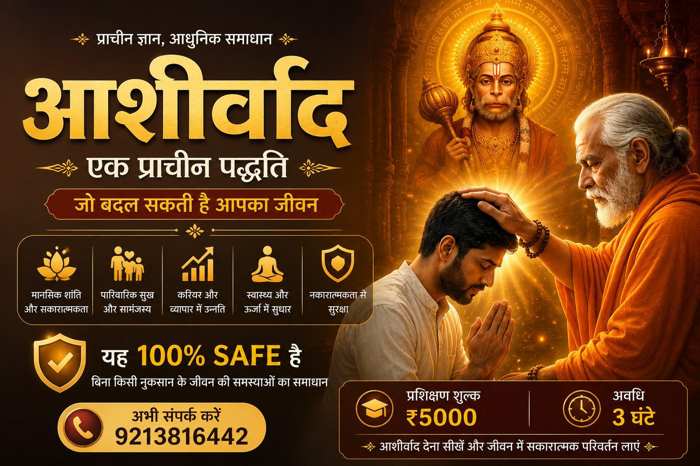

क्या आपने कभी सोचा है कि आशीर्वाद वास्तव में कैसे कार्य करता है? यह एक प्राचीन सकारात्मक आध्यात्मिक प्रक्रिया मानी जाती है, जिसका उपयोग जीवन में प्रेरणा, सकारात्मकता और मानसिक शांति के लिए किया जाता है।
अभी संपर्क करेंआशीर्वाद केवल शब्द नहीं, बल्कि शुभ भावना, सकारात्मक ऊर्जा और संकल्प का प्रतीक माना जाता है। भारतीय परंपरा में गुरु, संत और माता-पिता द्वारा दिया गया आशीर्वाद जीवन में सकारात्मक परिवर्तन और प्रेरणा का माध्यम माना गया है।

सकारात्मक सोच और मानसिक संतुलन बढ़ाने में सहायता।
परिवार में सकारात्मक वातावरण और समझ बढ़ाने की प्रेरणा।
आत्मविश्वास और आध्यात्मिक जागरूकता में सहायता।
जीवन में प्रेरणा और सकारात्मक दृष्टिकोण विकसित करने में सहायक।
आशीर्वाद की पारंपरिक और आध्यात्मिक समझ।
कैसे शुभ भावना और सकारात्मक ऊर्जा विकसित करें।
आशीर्वाद देने की पारंपरिक प्रक्रिया और अभ्यास।
Blessings (आशीर्वाद) कैसे कार्य करता है और कैसे दिया जाता है, यह सीखने के लिए आज ही संपर्क करें।
✨ प्रशिक्षण शुल्क: ₹5000
⏳ अवधि: 3 घंटे